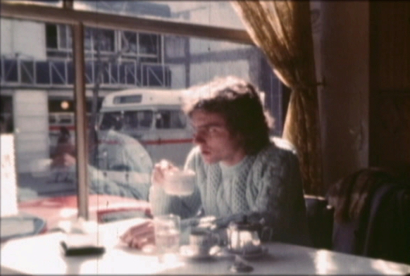

INVERNO (Invierno)
|
(Super- 8 mm, 88 min, cor, 1983) A los 24 anos, nuestro héroe vive solo, es periodista graduado, pero trabaja en una inmobiliaria. Se identifica con la ciudad sombría donde vive, con su apartamento lleno de discos y libros, con las películas a las que ve. Pero tiene poca cosa en común con la novia, los amigos, los padres, los colegas de trabajo. No consigue y no se esfuerza para conciliar los diferentes mundos por donde transita. Pero esta situación no puede durar mucho tiempo, y él va a ser obligado a dar una respuesta, al final de doce días de frío en Porto Alegre. |
 Foto por Roberto Henkin: Werner Schünemann |
{kind=link}
Dirección: Carlos Gerbase
Guión: Carlos Gerbase
Dirección de Fotografia: Roberto Henkin
Dirección de Arte: Marta Biavaschi y Luciana Tomasi
Dirección de Producción: Luciana Tomasi
Montaje: Giba Assis Brasil
Asistente de Dirección: Giba Assis Brasil y Alex Sernambi
Distribución: Casa de Cinema PoA
Elenco Principal:
Werner Schünemann (el héroe)
Luciene Adami (Mariana)
Marta Biavaschi (Lúcia)
Marco Antônio Sorio (Milton)
Cleide Fayad (Cláudia)
Luciana Tomasi (Isabel)
Premios
- 7º Festival Nacional de Cinema Super-8, Gramado, 1983:
Mejor Película.
Crítica
"La dirección de Gerbase es segura y creativa. La película mantiene un buen ritmo narrativo y los juegos del presente, pasado e imaginación quiebran la posible linealidad de la historia, presentada bajo la forma de un diario. Werner Schünemann, en la piel del protagonista de INVIERNO, tiene la mirada la perplejidad exacta del personaje, y Luciene Adami compone de manera sorprendentemente buena la figura de Mariana, la noviecita. (...) El guión (alinea) una serie de citaciones las películas, libros, discos y locales, que en la película hay una función mayor que la de la simples citación: sirven para definir el mundo del personaje y también ciertas preferencias del realizador."
(Tuio Becker, FOLHA DA TARDE, Porto Alegre, 23/04/83)
"INVERNO (...) soube captar com muito jeito a paisagem da cidade e o rosto introvertido dos dias de chuva. Mas a estrutura dos personagens ainda é muito rígida, ainda distante de uma pessoa de carne e osso. (...) Em nenhum momento o intelectualismo do personagem principal se descongela, ou a superficialidade da menina (Mariana) deixa de ser estereotipada. (...) A intenção de Carlos Gerbase de investigar o lado existencial esbarra numa emoção contida demais, num certo pudor de abdicar de um intelectualismo que nos limita e nos impede de crescer."
(Paulo César Teixeira, KRONIKA, Porto Alegre, abril/83)
"Obra essencialmente intimista - o que já se constitui em ousadia, não só em termos de Super-8, mas de cinema nacional -, INVERNO apresenta (...) uma estrutura dramática capaz de surpreender o espectador habituado ao tom coloquial dos filmes anteriores. (...) Gerbase faz de Porto Alegre sua Manhattan, em crônica poética que acompanha os sentimentos do personagem. (...) A lembrança de felicidade remete a outro cenário - Montevidéu - igualmente frio, mas próximo e ao mesmo tempo distante (em cenas de sensibilidade rara, na bela comunhão entre imagens e palavras)."
(Régis Müller, CORREIO DO POVO, Porto Alegre, 29/04/83)
"O cinema gaúcho tem em INVERNO seu produto de melhor qualidade. Aliando uma fluidez narrativa exemplar a uma utilização perfeita dos recursos do tempo e da memória, Gerbase constrói um filme que sabe falar a todas as platéias. O jovem jornalista (...) não é um tipo único. Ele é ao mesmo tempo um dos sobreviventes dos anos 70, um homem que olha amedrontado a falta de perspectivas de seu tempo. (...) Não é sem razão que o grupo de amigos vive dividido entre o niilismo de Milton (Marco Antônio Sorio) e a indecisão de Lúcia (Marta Biavaschi). A todos corresponde um descaminho, uma descontraída saída para o momento. Carlos Gerbase demonstra ser o mais intelectual dos realizadores gaúchos."
(Júlio Ricardo da Rosa, ZERO HORA, Porto Alegre, 05/05/83)
"INVERNO é a crônica, marcada por um lirismo que nos envolve, das indagações e das certezas (nem tantas) de um jovem jornalista, um 'Lobo das Estepes' que curte entre seus discos, livros e filmes a solidão de uma Porto Alegre mergulhada na bruma incolor de seus dias invernais e sem sol. olidão construída pelo distanciamento dos pais (...), pela esterilidade de seu relacionamento com Mariana (...) e mesmo pela auto-segregação em relação aos amigos, cujos papos se reiteram monocordicamente todas as noites num ritual gasto e improdutivo. (...) Palmas para Roberto Henkin. Incrível o resultado estético que consegue extraindo recursos insuspeitados do filme Super-8.
(Ivo Egon Stigger, FOLHA DA TARDE, Porto Alegre, 05/05/83)
"O primeiro longa totalmente assumido de Carlinhos Gerbase é um marco, sob muitos aspectos. Mostra um narrador seguro, capaz de enfrentar os perigos da longa duração sem cair na monotonia ou na disritmia (o problema dos estreantes). Mostra um acabamento técnico profissional, desmentindo aqueles que julgam a precariedade um dado inerente à bitola. (...) Para Gerbase, um valor a mais: desvincula sua personalidade autoral da figura carismática de Nelson Nadotti, com quem era confundido em trabalhos anteriores."
(Luiz César Cozzatti, ZERO HORA, Porto Alegre, 08/05/83)
24/03/1983